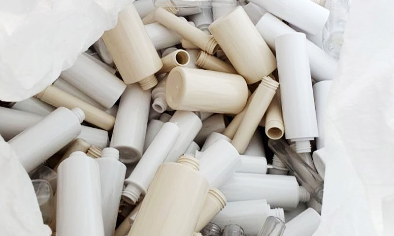
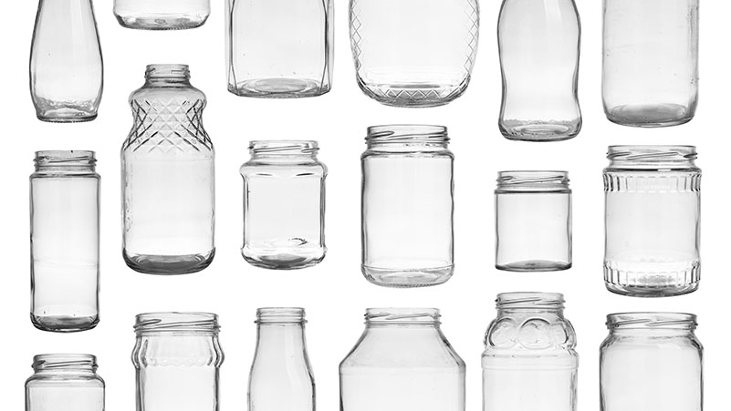

본문 영역
Issue NO.77 / POST
에디터 김수연 사진 김은성
-
플라스틱 대신 유리를 써보세요
-
지속가능한 환경
기사 내용
우리가 사용하는 화장품, 과연 용기까지 친환경일까요?
우리가 시장에서 만날 수 있는 대부분의 화장품은 플라스틱 용기에 담겨 판매됩니다. 가격이 저렴하고 만들기 쉽기 때문입니다. 하지만 플라스틱 용기는 이미 전 세계적 문제로 부상한 플라스틱 쓰레기를 발생시킵니다. 또한 사용자의 건강을 위해서도 플라스틱 사용을 줄여야 합니다. 오랫동안 방치된 플라스틱 화장품 용기를 만져보면 끈적한 느낌이 드는 경우가 있습니다. 화장품이 플라스틱과 화학반응을 일으키며 용기 사이로 스며들었기 때문입니다. 플라스틱 용기 안심하고 사용할 수 없습니다.
유럽인 85%, “친구와 가족에게 유리용기를 추천하겠다”
유리는 플라스틱의 훌륭한 대안입니다. 100% 재활용이 가능하며, 무한대로 재활용할 수 있습니다. 또한 용기 안의 제품과 화학적으로 반응하지 않아 안전합니다. 그러한 의미에서 최근 유럽에서 발표된 조사결과는 주목할 가치가 있습니다. 독일, 영국, 프랑스 등이 포함된 유럽 11개국 대상 설문조사에서 유럽인의 85%가 ‘그들의 친구와 가족에게 유리용기를 추천할 것’이라고 답했습니다. 이는 8년 전 조사에 비해 15% 증가한 수치입니다.
플라스틱 대신 유리를 선택하세요!
'착한상품'을 요구하는 목소리가 더욱 커져야만 환경을 지키고, 지속가능한 지구를 만드는 제품들이 시장에 더욱 많이 출시될 것입니다. 기업에게 소비자의 선호보다 더 큰 목소리는 없습니다. 지금 여러분의 장바구니에는 어떤 용기로 만든 제품이 담겨있나요? 지구를 위해, 그리고 당신을 위해 플라스틱 용기에 담긴 화장품 대신, 유리용기 화장품을 선택해보세요.